The Center for Research and Development on Secure Computer Systems (CRADSEC) was established in April 2025 under the Data Science Collaborative Support Unit (DS) of the Research Organization of Information and Systems (ROIS), Japan. ROIS comprises four national institutes and one collaborative support unit, with ROIS-DS serving as a foundation for advancing data science across research domains.
NEWS
- October XX, 2025
- 内容内容
- October XX, 2025
- 内容内容
- October XX, 2025
- 内容内容
Overview

We aim to realize a unified TEE architecture that can flexibly operate across diverse platforms ranging from IoT devices to the cloud. This architecture will allow the selection of appropriate enclave configurations and protection mechanisms according to specific requirements and threat models, while taking into account trade-offs among security, performance, and energy consumption.
From the hardware perspective, we will provide highly versatile TEE primitives. Using these primitives, system software will be able to flexibly configure protection domains. From the theoretical perspective, we will develop formal verification techniques to ensure that the protection domains built on top of the TEE primitives are provably secure against the assumed threat models.
Furthermore, we will develop a software environment that enables secure execution of advanced cryptographic operations on the proposed TEE. As a proof of concept (PoC), we will prototype applications that realize secure data distribution.
All developed artifacts will be released as open source including hardware IPs.
Members
-

Yutaka Ishikawa
Director, Project Professor -
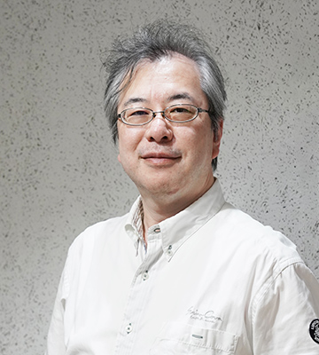
Masahiro Goshima
Vice Director, Professor -
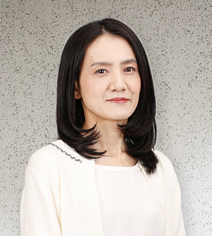
Atsuko Takefusa
Vice Director, Professor -
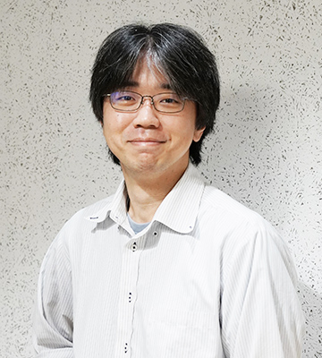
Taro Sekiyama
Vice Director, Associate Professor -

Kenji Kono
Vice Director, Visiting Professor -

Atsushi Ohori
Project Professor -
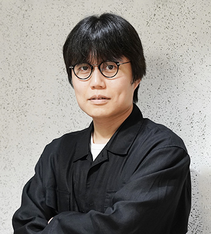
Satsuya Ohata
Researcher -
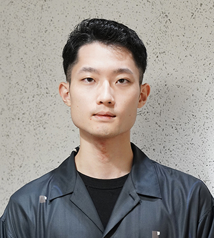
Kazuhide Uchiyama
Research Assistant -
Wakuto Matsumi
Research Assistant -

Reina Sasaki
Research Assistant -
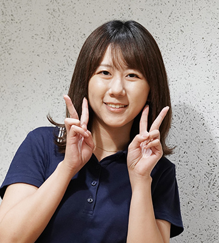
Haruka Kita
Research Assistant -

Jun Furukawa
Visiting Professor -

Shinya Takamaeda
Visiting Associate Professor -
Ryota Shioya
Visiting Associate Professor -
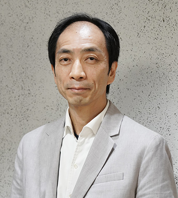
Keiji Kimura
Visiting Professor -

Kenichi Kourai
Visiting Professor -
Kuniyasu Suzaki
Visiting Professor -

Hironori Nakajo
Visiting Professor -

Shinichi Miyazawa
Visiting Lecturer -
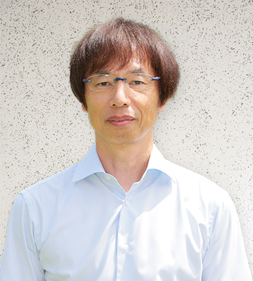
Atsuhi Mitsuzawa
Visiting Professor -

Masato Oguchi
Visiting Professor -
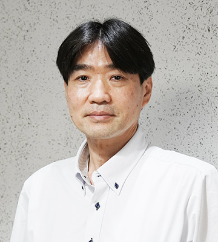
Naoki Kobayashi
Visiting Professor -

Terufumi Hata
Visiting Research Assistant -
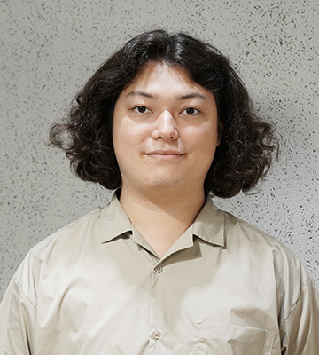
Shogo Takata
Visiting Research Assistant -
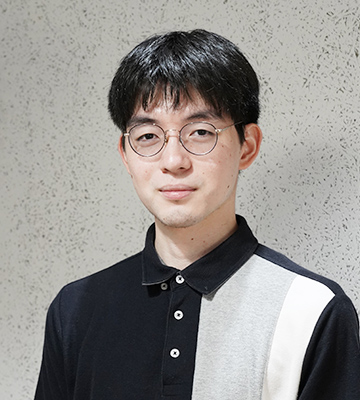
Koichi Hashimoto
Visiting Research Assistant